Los etíopes Tummo Turbo y Edato Gadisse fueron los vencedores del XXIII Maratón de San Sebastián , en el que se registraron marcas poco brillantes.
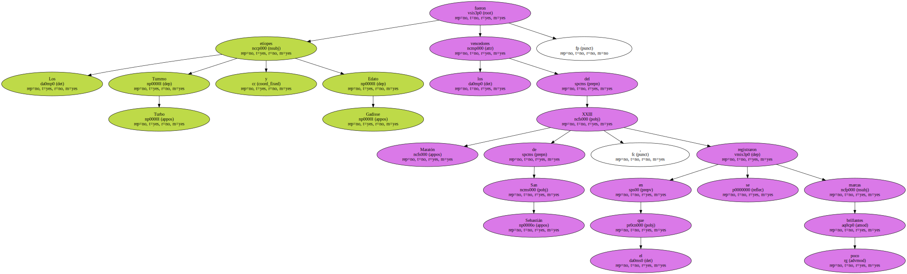Turbo , favorito en los pronósticos , ya sabe lo que es correr por debajo de dos horas y 10 minutos , por lo que su crono de 2.12:28 le dejó indiferente , máxime habiendo hecho este mismo año , en Turín , 2.11:07.
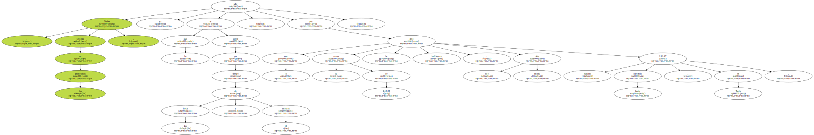Si a Turbo le faltó alguien que tirase de él , que le provocara , después del km.24 , a su compatriota Edato Gadisse nadie le dio respuesta adecuada.
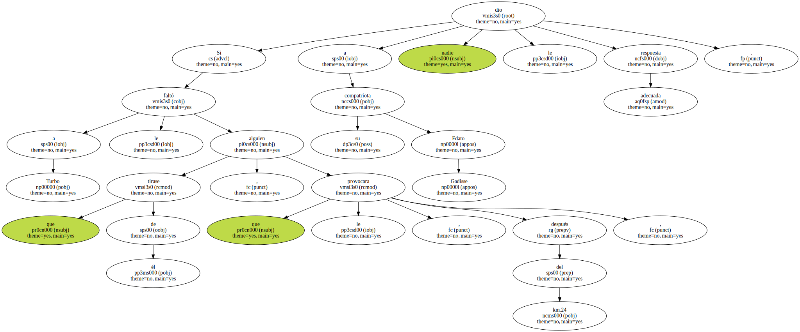Rocío Ríos no rindió bien y Jane Salumae , de Estonia , se retiró.

Así pues , la falta de rivales , de atletas que les pusieran en tensión , invalidó el intento de los organizadores de conseguir un relanzamiento del maratón de San Sebastián a través de marcas de calidad.
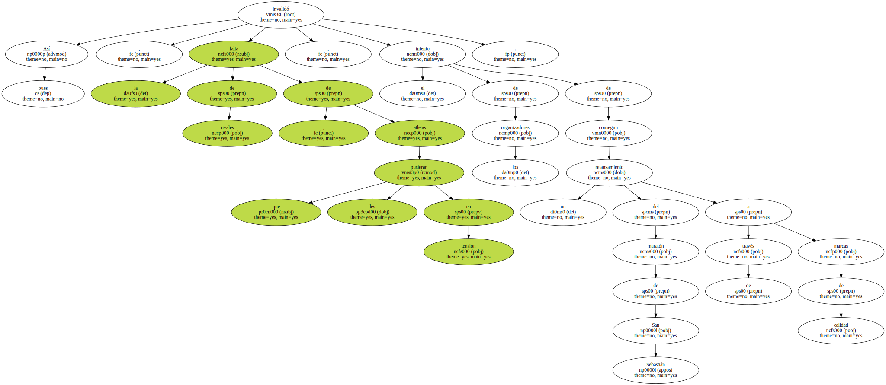Los 1.300 atletas participantes tuvieron ante sí un espléndido recorrido , el respeto de la lluvia - amenazante días pasados - , una temperatura entre 15 y 17 grados , aunque con algo de viento molesto en zonas determinadas del recorrido y , eso sí , alto porcentaje de humedad.
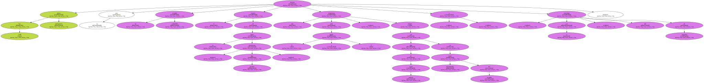Sólo los tres hombres del podio , los auténticos protagonistas del maratón , terminaron en tiempos de cierto reconocimiento , ya que el cuarto - Wesley Chelule , de Kenia , anunciado con una mejor marca de 2.10:14- , completó el circuito de 42,195 kms. en 2.16:44.
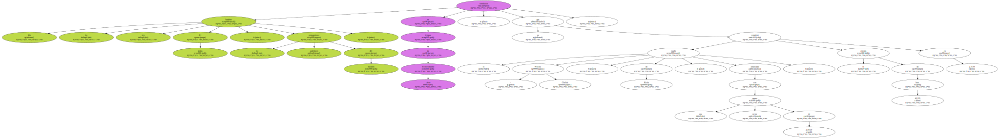Antes del fracaso colectivo de los africanos , el décimo en la llegada al estadio de Anoeta se fue a un `redondo` 2 horas y 22 minutos , las liebres seleccionadas cumplieron bien su papel.
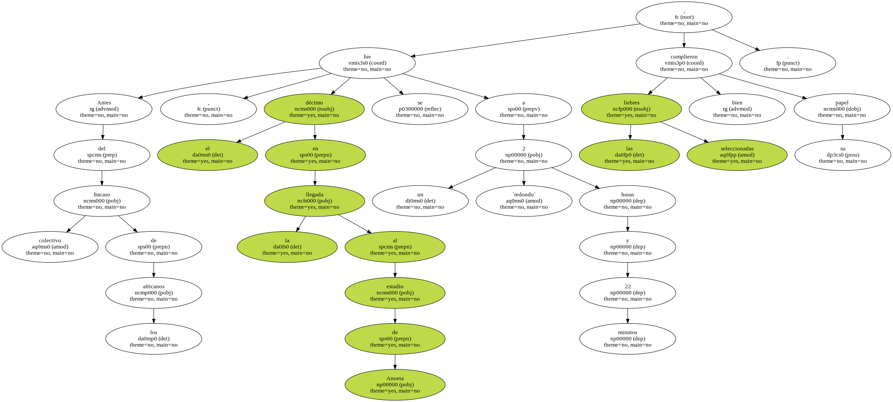Fue el caso del navarro Andrés Pérez Onieva , conductor de la prueba hasta aproximadamente el km.12 y de Mohamed Erraoui , de Marruecos , que pasó el medio maratón en 1.04:32.
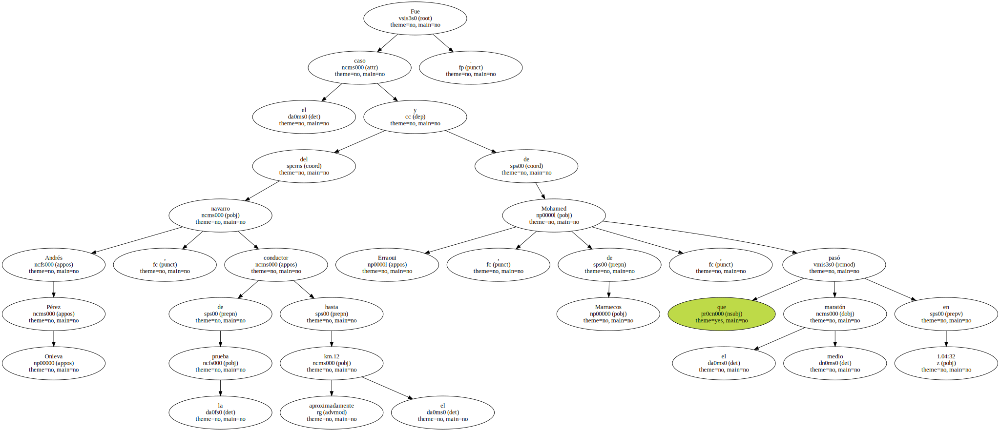Luego Elias Chebet , Mohamed El Hattab e incluso el etíope Tummo Turbo lanzaron sus ataques , pero fueron artificiosos , sin la chispa y potencia que requería un sostenido y solitario mando de la carrera.
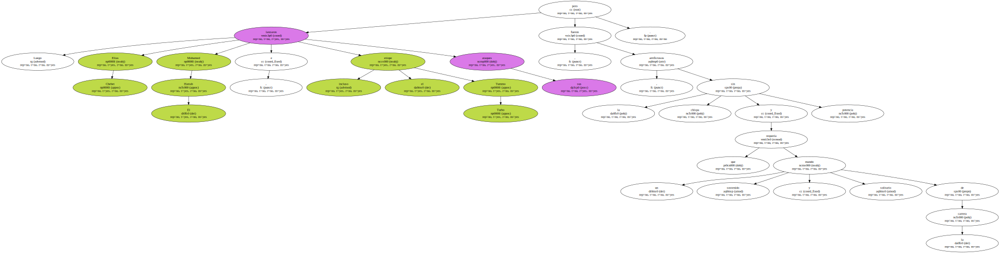Se acabaron las liebres , se acabaron las posibilidades de tiempos dignos de respeto.
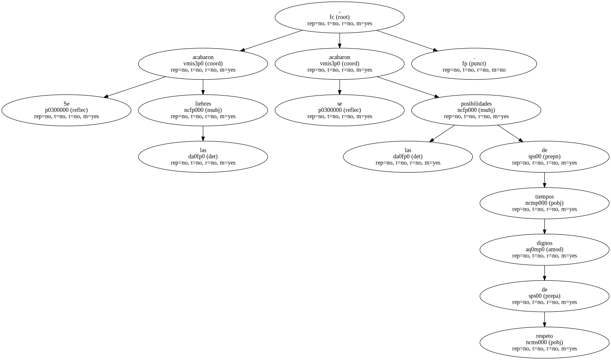El maratón terminó con un sprint de Turbo y E. Chebet , a los que se adjudicaron marcas de 2.12:28 y 2.12:29.

El marroquí El Hattab finalizó en 2.14:50.
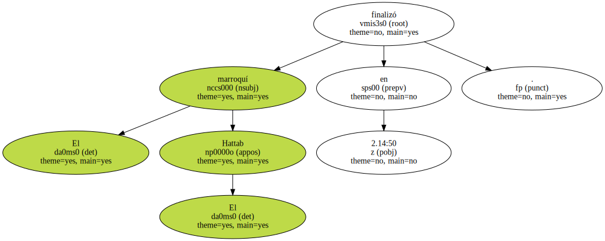El resto de los africanos fallaron , aunque varios de ellos se batieron con honestidad al ser debutantes.
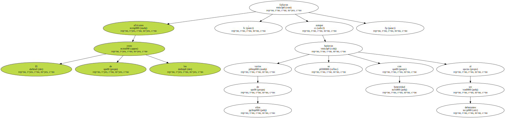Fracasaron Moges Taye , 11 minutos más lento que su mejor crono , y Peter Chebet , el vencedor de este maratón en 1999 , al que los jueces cogieron un tiempo de 2.28:04.
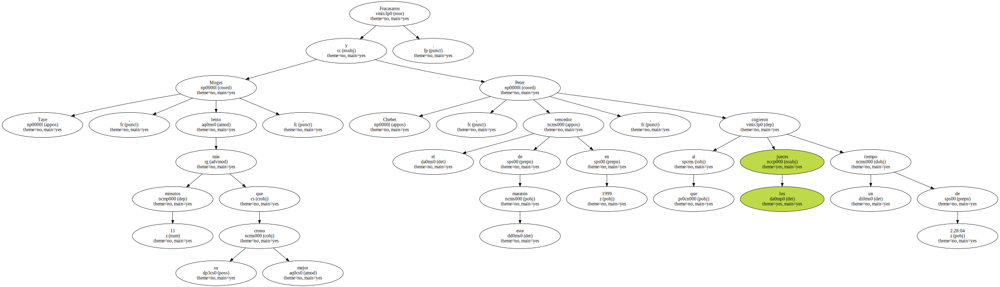Peter Chebet fue superado por los españoles Diego Alejandro López ( 2.22:46 ) y Jacinto Farto ( 2.23:25 ) en su debú.
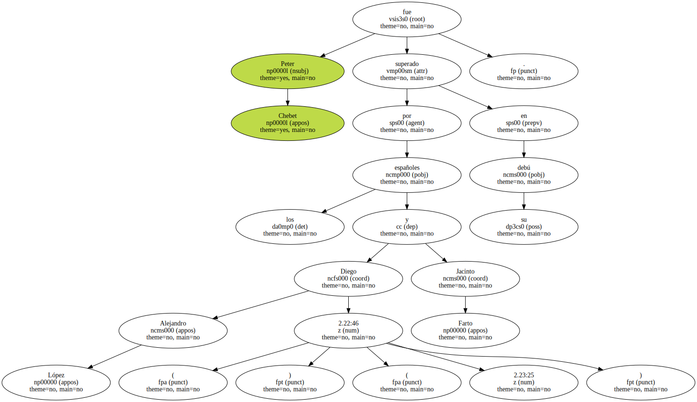